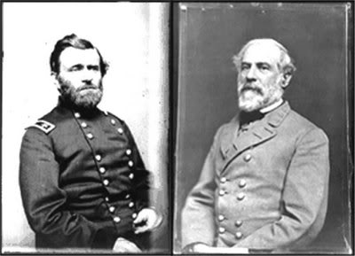
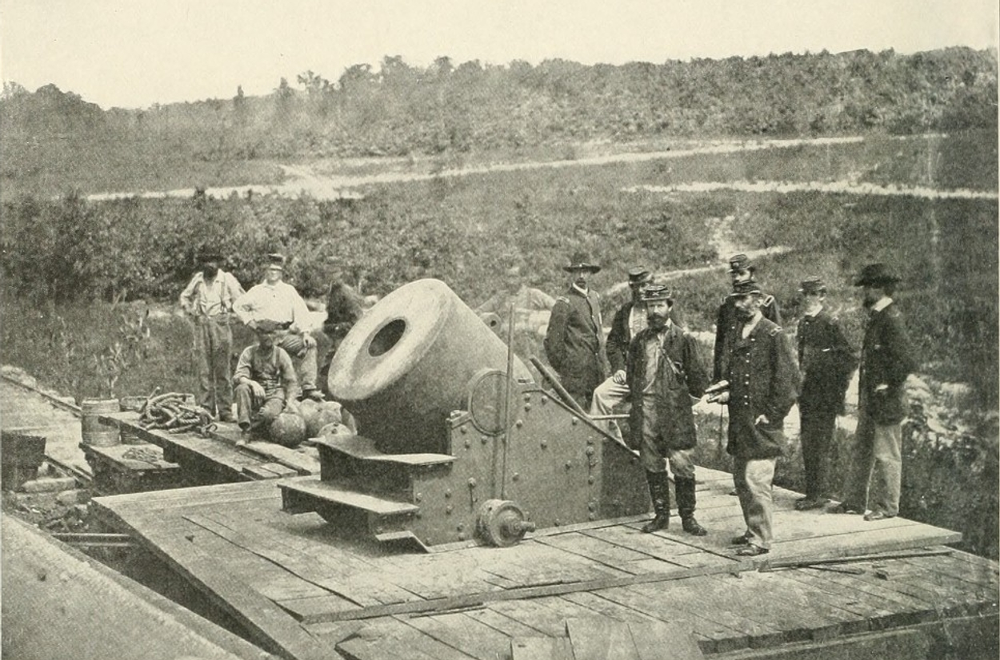
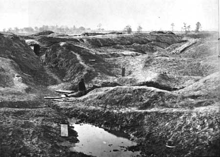

|
The ten-month Petersburg Campaign was the longest
military operation of the Civil War. From May-June 1864,
General Robert E. Lee had blocked successive attempts by
Lieutenant General Ulysses S. Grant to destroy the
Confederate Army and capture Richmond in the Overland
Campaign. Frustrated at the stalemate after the battle of
Cold Harbor in early June, Grant decided to cross the James
|

Gen. Ulysses S. Grant and Gen. Robert E. Lee
|
River and seize Petersburg, Virginia, a vital communication
and rail center twenty miles south of Richmond. If the Union
Army prevailed at Petersburg, the Confederate capital would
likely fall shortly afterwards.
On June 12 the Union's largest fighting force, the Army
of the Potomac, left Cold Harbor and marched over fifty
miles to the James River. Waiting for them was a 2,100 foot
long pontoon bridge built by the Yankee soldiers, a triumph
of engineering. By June 16, the entire Union Army was on the
south bank of the river. Moving swiftly, the Federals were
closing in on Petersburg, a day's march away. Soldiers and
officers alike wondered what they would find when they
reached the city gates.
In 1860, Petersburg was Virginia's second largest city,
with a population of 18,000, half of which was black, and a
third of those, free. Petersburg enjoyed a thriving
economy. A city of cotton mills, tobacco factories and
railroads, Petersburg was poised to play an important part
in the war. From the beginning, Petersburg's streets and
railroad stations were clogged with soldiers and supplies.
All but one of the railroads that tied Richmond with the
rest of the southern and western Confederacy passed through
its smaller neighbor to the south.
Not surprisingly, Petersburg, along with Richmond, was a
desirable target of the Union Army, and in the summer of
1862 slaves and soldiers began construction of a ten-mile
line of fortifications around the city. Finished by 1863,
the lines were manned by a small force of 2,200 men under
the command of Brigadier General Henry A. Wise as the first
Federal Corps approached the city. Inside, the civilian
population, mostly made up of women, children, and slaves,
watched and worried. Already suffering from the effects of
inflation, food shortages and other inconveniences, women,
black and white, upper and lower class prepared their
families for the worst.
From June 15th through June 18th, the Federal forces,
numbering around 63,000, threatened to overwhelm the much
smaller Confederate defenders. General Ulysses S. Grant, the
commander of all the Union Armies, was supervising Major
General George Meade's Army of the Potomac. His strategy was
to take Petersburg by storm, cut off all Confederate supply
lines, confront and defeat Lee's army on the way to
Richmond. Unfortunately, due to a combination of long
standing command problems within the Army of the Potomac,
confused and contradictory communications between units, and
the extreme battle fatigue of the men after weeks of heavy
fighting, Union assaults failed to capture the Petersburg
|

The "Dictator," the largest mortar gun in the
Federal arsenal, was used extensively during the siege of Petersburg.
|
works. The Confederates quickly brought in reinforcements
that made their defensive position even more formidable.
Four days of fighting left the Federals with losses of
10,586 compared to 4,000 for the Rebels. On June 18, Lee
arrived to direct operations. Grant realized that continued
frontal attacks would be useless, and ordered his men to
"use the spade." The siege of Petersburg had begun.
Both Grant and Lee realized the disadvantages of a long
siege. Under heavy pressure to win the war quickly, Grant
was aware that the success of his military career was tied
to the political fortunes of his commander-in-chief Abraham
Lincoln. At this point, only victories in the field could
sustain the Republicans in the fall elections, and during
the spring and summer of 1864 all of the Federal armies,
east and west, were stalemated. Large parts of the North
were expressing dissatisfaction with the war's costs. Lee,
on the other hand, would not win a war of attrition with the
enemy. Time was not on his side. The southern population
could not endure much more privation than had already been
inflicted. Confederates now hoped that the war-weary
northern nation would oust Lincoln and elect a Democrat who
might stop the war and accept southern independence. Despite
their misgivings, Grant and Lee adjusted to a type of
warfare that they neither anticipated nor desired.
Grant planned to encircle Petersburg and cut off all of
Lee's supply lines. He ordered his soldiers to build a
trench system around Lee's twenty-six mile line of defensive
fortifications stretching from Petersburg to Richmond. By
late June the Confederates had approximately 50,000 men to
112,000 for the Union. Grant established his military
headquarters at City Point, Virginia, on the James River
halfway between Petersburg and Richmond. From City Point,
Grant presided over a vast logistical operation that kept
the supplies flowing in to the troops in the field. Whereas
Union soldiers were relatively well fed, clothed and armed,
the southern soldiers suffered from hunger and other
privations. As the siege wore on, as the Union shelling
pounded the southern lines and the city behind day after
day, desertions among the Confederates rose and civilian
morale plunged. "The vandals are still throwing shell into
the city, and it is very distressing to see the women and
children leaving," wrote one diarist. Thousands of residents
fled the city as refugees, flooding the roads to Richmond.
As the summer wore on, Grant's army extended their lines
around the city. In addition, he sent units out to cut the
major railroad connections. Lee dispatched mobile forces to
stop the Union's forays, and many battles took place away
from the siege area. Lee also mounted another major campaign
in the Shenandoah Valley under General Jubal A. Early to
draw troops away from Petersburg and Richmond. This campaign
|

The Crater, as it appeared a few
weeks after the Battle.
|
resulted in the defeat of the Confederates in the Valley,
and the triumph of one of Grant's best generals, Philip H.
Sheridan.
Grant periodically ordered big attacks such as the famous
and ill-starred "Battle of the Crater," which occurred on
July 30, 1864, and involved a division of African-American
soldiers who performed bravely in battle in spite of poor
leadership from white officers and little support. On
September 1, Atlanta fell, and Lincoln's reelection was
assured. The hard winter of 1864-1865 brought Lee's army to
the breaking point. In March of 1865, a desperate Lee
launched the first big assault of the spring at Fort
Stedman. Grant counterattacked with great effect. For all
intents and purposes, the siege of Petersburg was over. The
long siege had produced 42,000 Union and 28,000 Confederate
casualties.
On April 1, Union cavalry under Sheridan attacked the
western end of Lee's defensive line. Lee decided to cut his
losses and move southward. In doing so, he hoped to join
another Confederate army in eastern North Carolina to
prevent Major General William T. Sherman's western army from
combining with Grant's. On April 2, Grant ordered an assault
on a weakened Petersburg line, winning the city before dawn
on the next day. Richmond fell only hours later, on the
morning of April 3. Shortly thereafter, Grant accepted the
surrender of Lee's army at Appomattox Court House, Virginia.
Most of the remaining civilians of Petersburg had been
evacuated to safety. The city was in ruins. One Yankee
soldier remembered: "Petersburgh has been a pretty Place but
it is a hard looking Place now."
Source: Joan Waugh, ed., Facts on File Encyclopedia of American
History: Civil War and Reconstruction, 1856 to 1869 (New York: Facts on
File, 2003), 270-273.
|